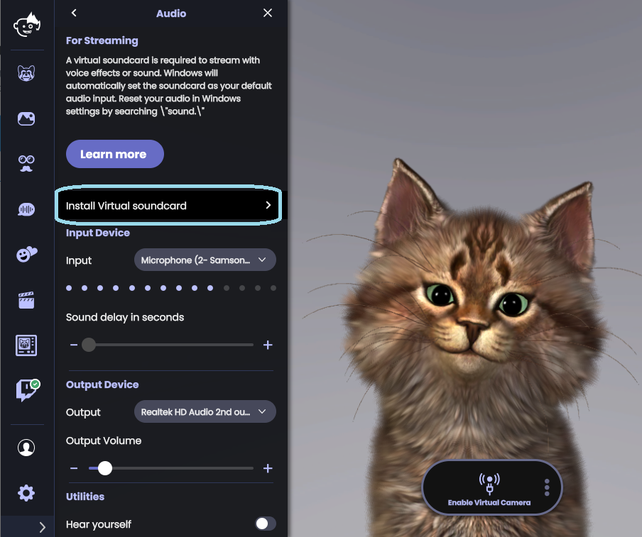
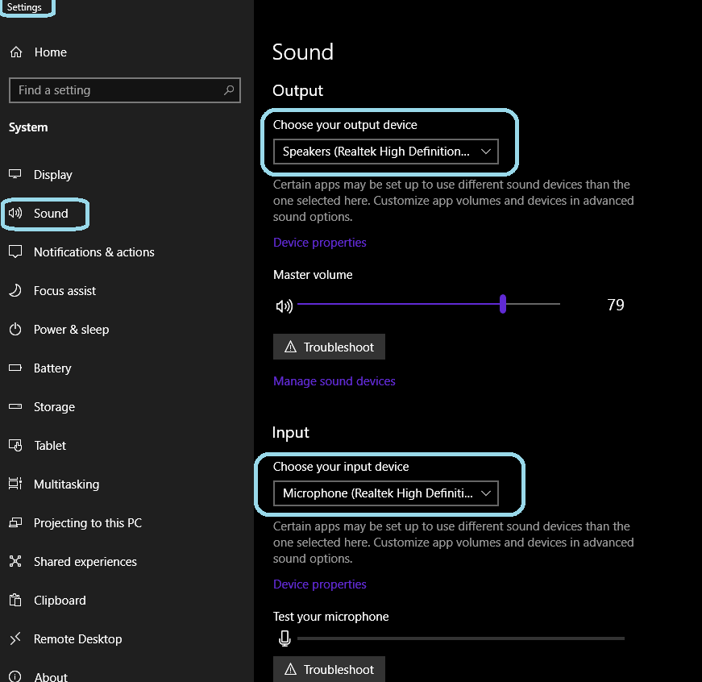
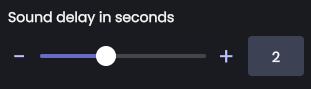
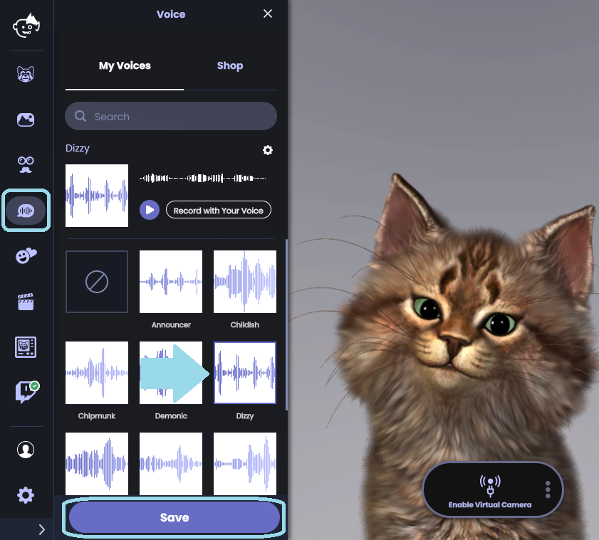
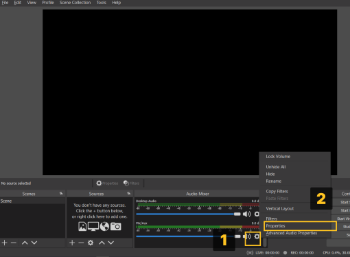
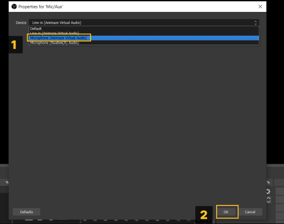
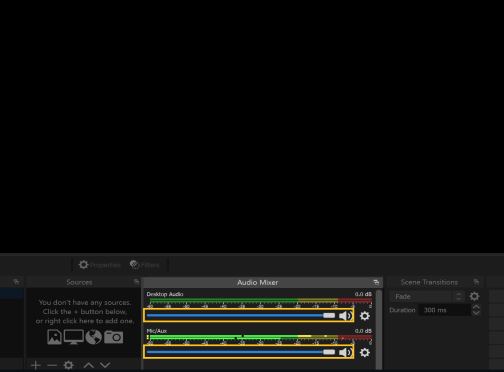
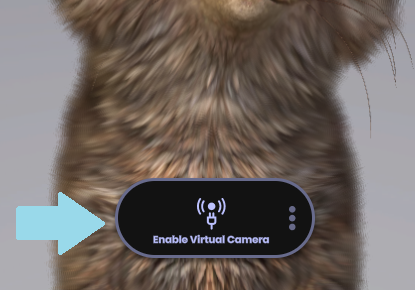
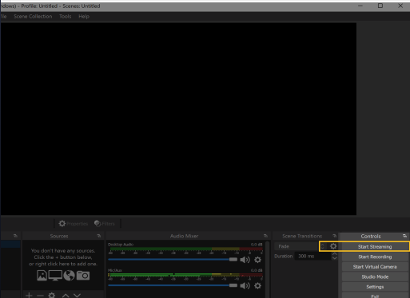

Animaze Desktop: How can I use the voice effects?
If you want to morph your voice, Animaze has prepared some voice effects for you. Here is how you can use them: 
1. In Animaze, go to Settings > Audio and click on Install Virtual Soundcard and let the installer install the virtual soundcard.
NOTE: The installation of the Virtual Soundcard will automatically change your audio preferences and might result in no sound in other applications.
Please change your sound settings so that your input and output are to your liking.

2. After you have installed the Virtual Soundcard, restart your computer and the Animaze app to make the changes come into effect.
3. Once this is done, go to Animaze > Settings > Audio and then adjust the sound delay for your stream.

4. Go to Voice > My Voices, select your desired voice effect and click on Save.

Now, in order to stream with a voice effect (we chose OBS for this tutorial):
5. In the Audio Mixer, at the center bottom, click on the cog icon on “Mic/Aux” and click Properties.

6. Under Devices, in the new window, Select “Microphone (Animaze Virtual Audio)” and then click OK.

7. In the Audio Mixer, mute anything else you don't want to hear in your stream.

8. In Animaze, click on Enable Virtual Camera to see the Animaze feed in OBS.

9. To go live on Twitch, click “Start Streaming” in OBS.
